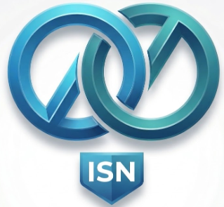

El Instituto Superior NEXUS es la principal institución dedicada a la formación de profesionales en tecnología,
desarrollo de software y sistemas.
Nuestro objetivo es brindarte las herramientas prácticas y
teóricas para que domines el mercado laboral actual desde el primer semestre.
Contamos con un campus tecnológico de primer nivel.
Nos encontramos ubicados en el sector central de Quito,
ofreciendo laboratorios equipados y espacios de simulación de hardware y redes.
Tecnología Superior en Desarrollo de Software Full-Stack
Esta es nuestra carrera estrella orientada a la Web 30.
Tecnología en Sistemas Embebidos y Mecánica Avanzada
Aprende en nuestros talleres con un área de 120 m2.
Tecnología en Administración de Bases de Datos y Arquitectura Cloud
Domina motores relacionales de alto nivel y especialízate en procesos críticos como respaldos y restauraciones en PostgreSQL.
Conviértete en el arquitecto de datos que gestiona la información vital de cualquier empresa.
Inversión semestral: Costo regular $150.00 | Promoción nuevos estudiantes: $100.00
Nota importante: Todas las carreras tecnológicas tienen una duración de 5 semestres.
Los cupos son limitados por cada laboratorio. El inicio de clases está sujeto a un mínimo de matriculados.
Desde el primer semestre, desarrollarás lógica pura. Aquí tienes un pequeño vistazo:
// Ejemplo básico en C++ para simuladores
function validarAcceso(nombre) {
return "Bienvenido, " + nombre + "!";
}
console.log(validarAcceso("Estudiante"));
Usamos entidades en el código para mostrar símbolos como < (menor que) y > (mayor que) sin que el navegador se confunda.
Avanza al siguiente nivel de tu carrera →
Fase Inicial: Postulación
Fase de Evaluación (Continuación)
Fase Final: ¡Cuenta regresiva para el éxito!
"La educación en tecnología no trata solo de aprender a codificar, sino de desarrollar la lógica pura para crear las soluciones del mañana."
- Extraído de la visión de NEXUS Tech Foundation
Da el primer paso y únete al ISN. Tu futuro como desarrollador empieza aquí.
Copyright © 2026 Instituto Superior NEXUS. Todos los derechos reservados.